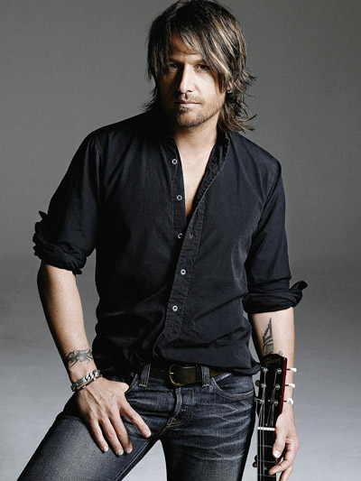

Keith Urban with his wife Nicole Kidman
Keith Urban
Keith Lionel Urban was born on October 26, 1967. He is an Australian singer, songwriter and record producer. He was born New Zealand and how he grew up in Australia and in 1991, he released a self-titled debut album, charting four singles in Australia before moving to the United States the following year. He found work as a session guitarist before starting a band known as The Ranch, which recorded one studio album on Capitol Nashville and charted two singles on the US Billboard Hot Country Songs chart. When he was in Nashville back in 1998, he frquently used cocaine. While he was using cocaine, he decided to stop using the drug and checked into Cumberland Heights to begin treatment in Nashville. Back in 2006, he met an Australian actress Nicole Kidman at G'Day LA which was a Hollywood event. After they met, they started dating and married on June 25, 2006 at the Cardinal Cerrettie Memorial Chapel in the grounds of St Patrick's Estate, Manly, in Sydney. A couple years later, on January 7, 2008, Keith Urban and Nicole Kidman welcomed a daughter named Sunday Rose Kidman Urban in Nashville, Tennesse. After they welcomed their first child, they also welcomed a second daughter named Faith Margaret Kidman by surrogate at Nashville's Centennial Women's Hospital in 2010.

Genre of Music
- Country
- Country Pop
- Country Rock
- Pop Rock
Instruments
- Vocals
- Guitar
- Bass Guitar
- Banjo Guitar
- Piano
- Mandolin
Labels
- Capital Nashville
- Hit Red

Keith Urban and Nicole Kidman with their children